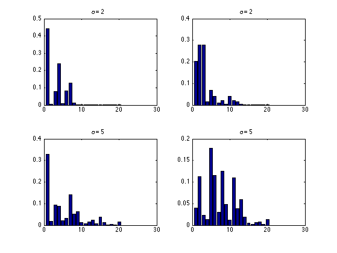

generates from stick-breaking construction
%PMTKauthor Yee Whye Teh %PMTKurl http://www.gatsby.ucl.ac.uk/~ywteh/teaching/npbayes/mlss2007.zip %PMTKmodified Kevin Murphy % Originally called SBgenerate alpha = [2 5]; nn = 20; % 59; setSeed(0); figure; for ii = 1:length(alpha) for trial=1:2 subplot2(2,2,ii,trial) beta = betarnd(1,alpha(ii), 1,nn); neg = cumprod(1-beta); pi = beta .* [1 neg(1:end-1)]; bar(1:nn,pi); title(['\alpha = ' num2str(alpha(ii))]); end end printPmtkFigure('stickBreakingDemo')